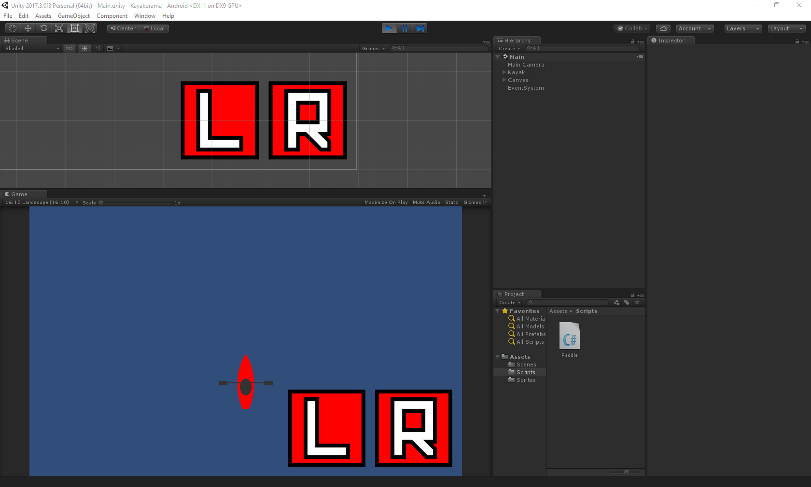
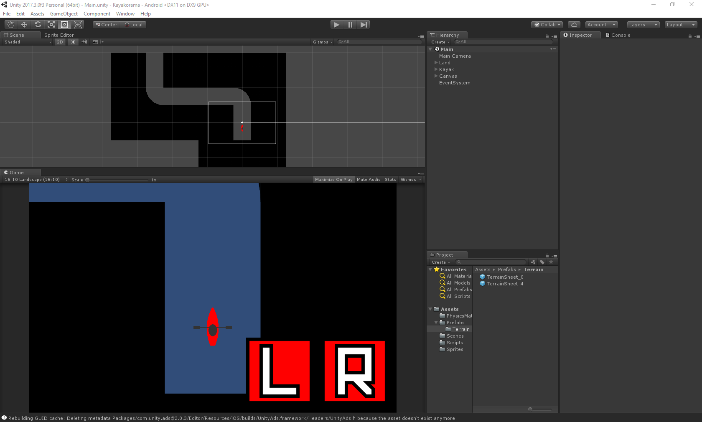
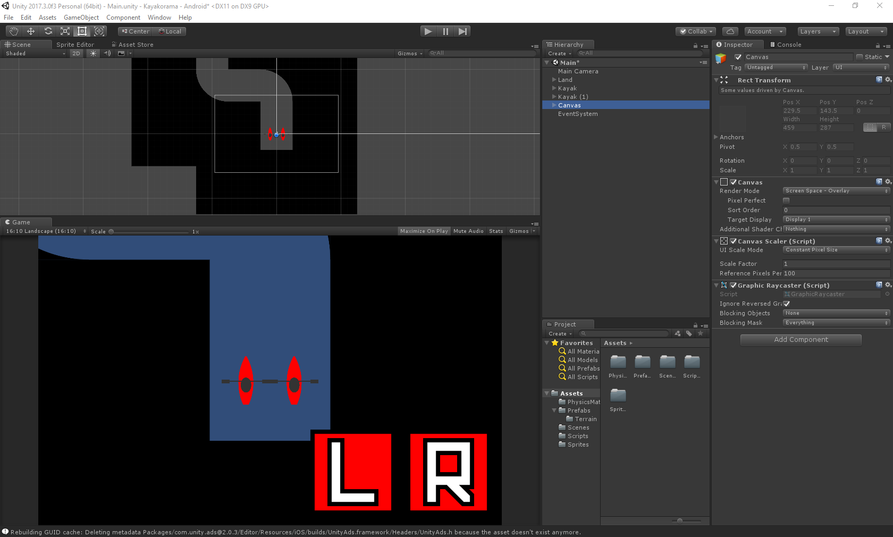
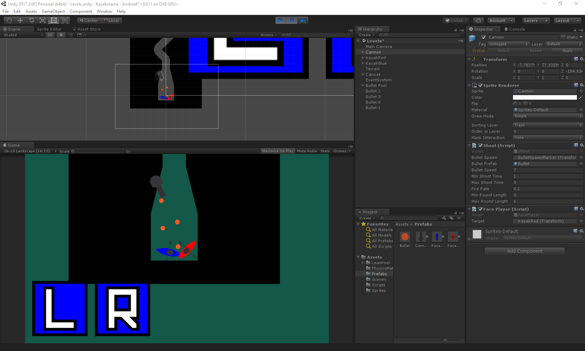
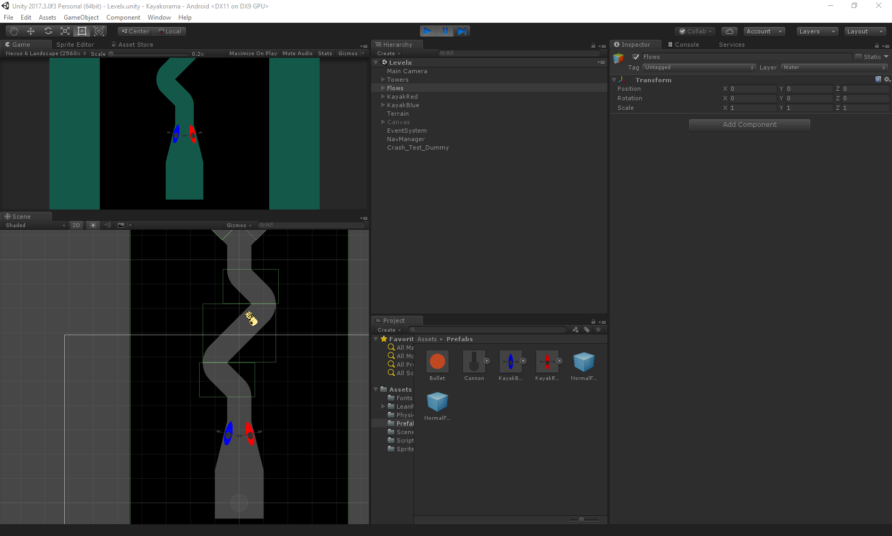

Today Kayak-O-Rama is still very, very early in its development with “programmer-art” and only one level, but I put more than a hundred hours into it regardless. Right now it includes a burst-firing ball-cannon that I coded from scratch, workable flow-physics, and strikingly immersive parallax trees.
Here I got the physics of the kayak working. It only had keyboard controls at this point. Pressing the left key applies a forward force to the kayak at the two left points I placed around the left paddle, and it's the same on the right. I wrote a script to give the kayak more side-to-side friction than forward-and-backward, like a real boat.

Then I added touch controls.

Here I got the terrain working, which was fairly straightforward—it's just an image with a collider.

Two-player gameplay went smoothly, though in this screenshot I could only control one kayak with touch buttons—the other was still keyboard-controlled.

At this point I'm still messing with the touch controls, but I also got a burst-firing ball-canon functioning. I took advantage of an object pooling asset I found to efficiently deal with all of those projectiles, and wrote the shooting script myself: it alternates between firing a random number of balls at a set rate and “cooling down” for a random length of time, and is very configurable.

Here I started working with flow physics. It's simply a bunch of rectangles that, depending on their rotation, apply a force to the kayaks, or even floating test dummies. They can be overlapped. I'm not really satisfied with this solution, and I might give vector fields a shot, but the best solution may just be a more sophisticated version of the rectangle scheme I have now. I'm just not sure how well that would scale.I finally got the touch controls down. I made the rectangles white to provide some visual cue. It's gross looking, but it'll do until the fundamental physics are set. Not pictured is the main menu of the game, where you can choose between one and two players (only one level though). I also, finally, did something about the graphics. The trees turned out pretty well, I think. You can’t tell from the screenshots, but they have a parallax effect set up which makes the scene a lot more immersive. Suddenly there was this sense of scale. I haven’t got to building the vines; for that I will look into splines first.